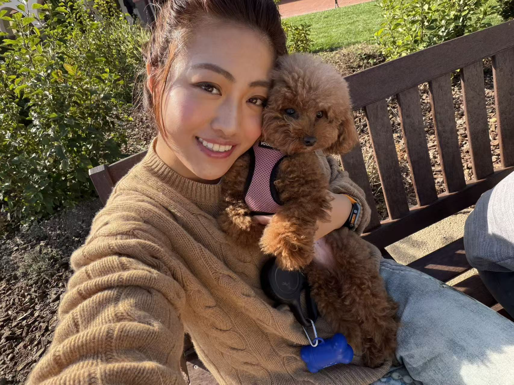
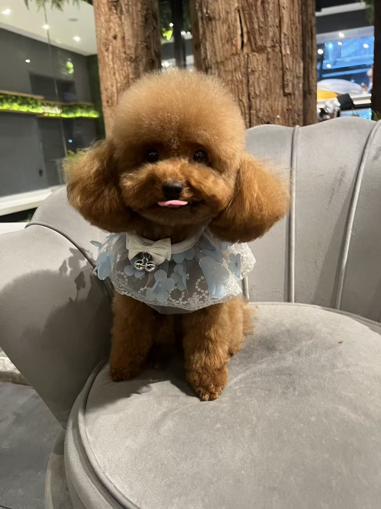

Originally from Harbin, where winters arrive like old friends — heavy, inevitable, familiar. I moved to the US at seventeen, and have since learned to call the Bay Area, San Diego, and New York home. Each city taught me a different way to listen.
I build products the way I observe people: slowly, curiously, looking for the pattern underneath the behaviour.
Currently building —
What draws me in: psychology, human behaviour, and the quiet art of designing things that help people understand themselves and each other.
When I'm not building, I'm on a slope, on a golf course, in a cinema, in a café watching strangers arrange themselves into stories.
I have a red toy poodle named Donut — a boy, five years old, a Gemini. He came into my life during COVID, which is to say he arrived exactly when he was supposed to.

Catherine & Donut

Donut, dressed for the occasion.